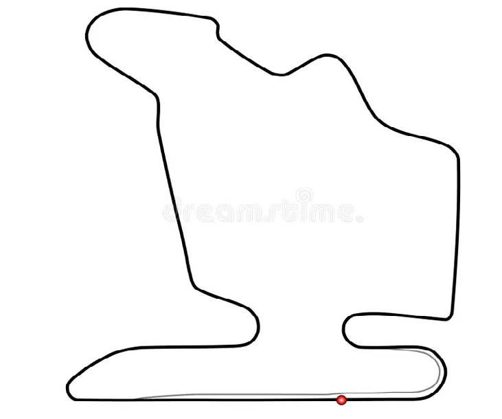

Introducción
Inaugurado en 1986, fue el primer Gran Premio de F1 celebrado detrás del Telón de Acero durante la Guerra Fría. Está ubicado en un valle natural, lo que permite a los espectadores ver gran parte del trazado.
Notas Clave de la Pista
Es apodado el "Mónaco sin muros" por su naturaleza lenta y revirada. Es notoriamente difícil adelantar. El calor del verano y la falta de rectas lo hacen muy exigente con la refrigeración de los motores.
Tipo de Pista
Es un circuito permanente (Autódromo) de máxima carga aerodinámica. El trazado es una sucesión constante de curvas lentas y medias, con muy pocas oportunidades para el coche de tomar aire y enfriarse.
⬅ Volver